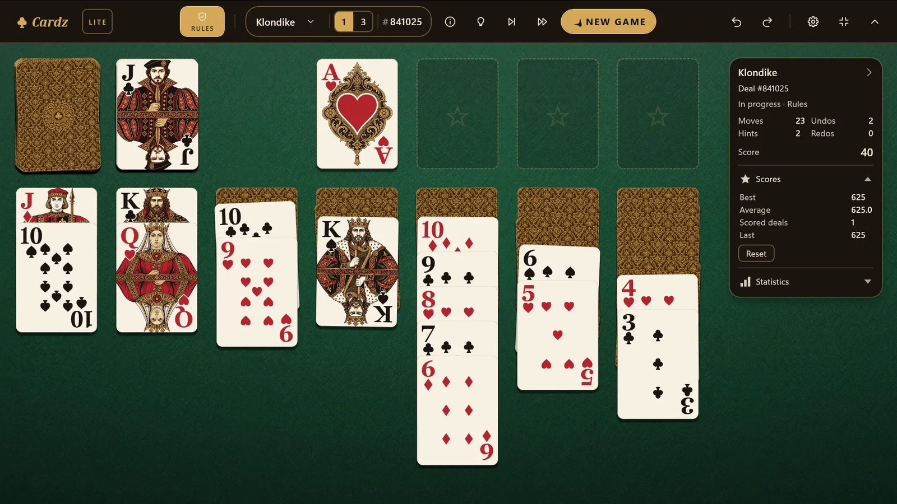
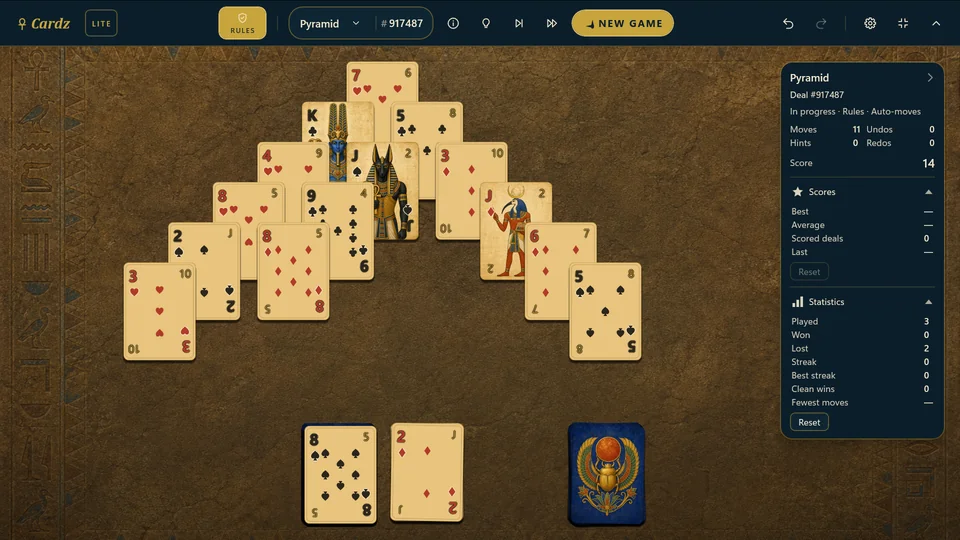
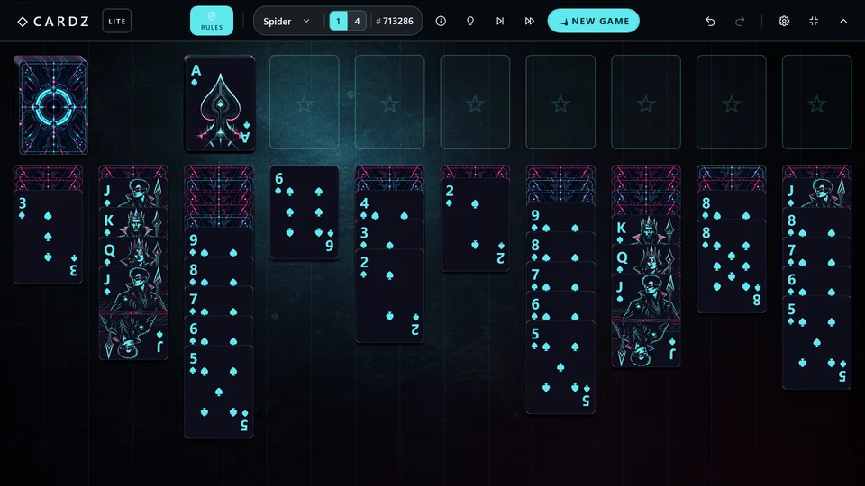
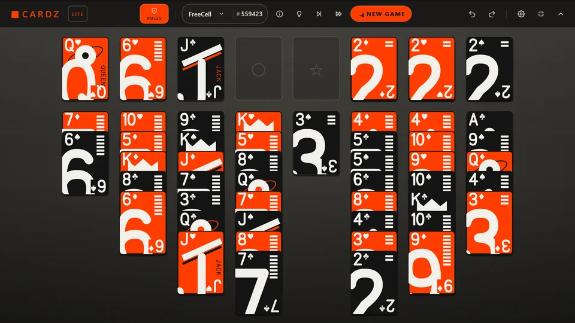
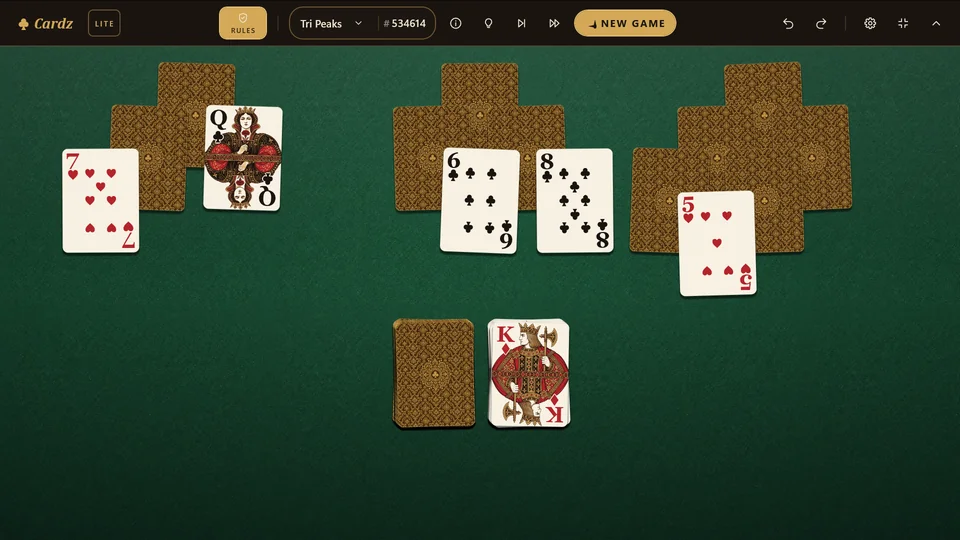
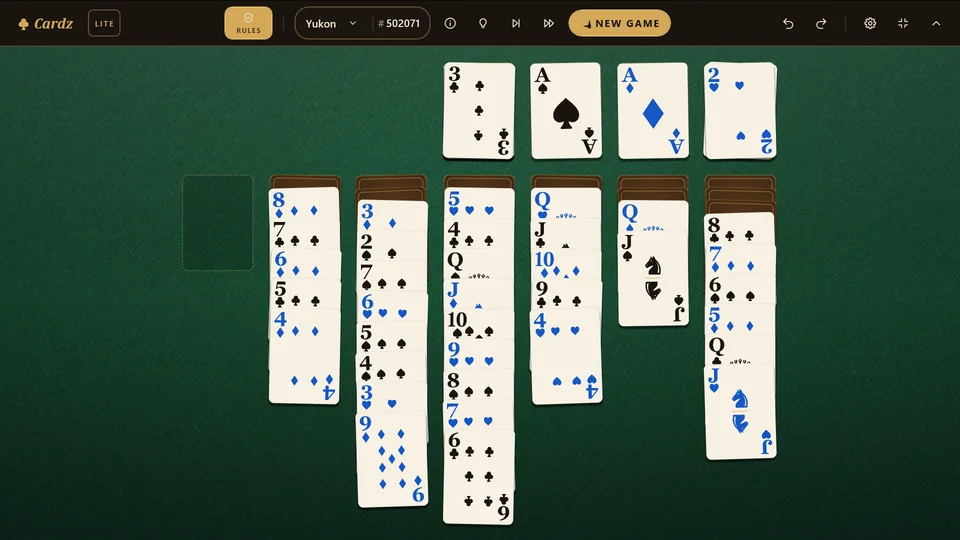
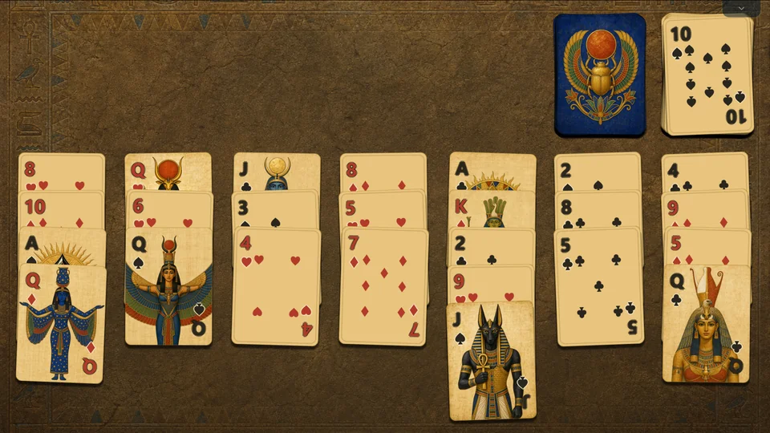
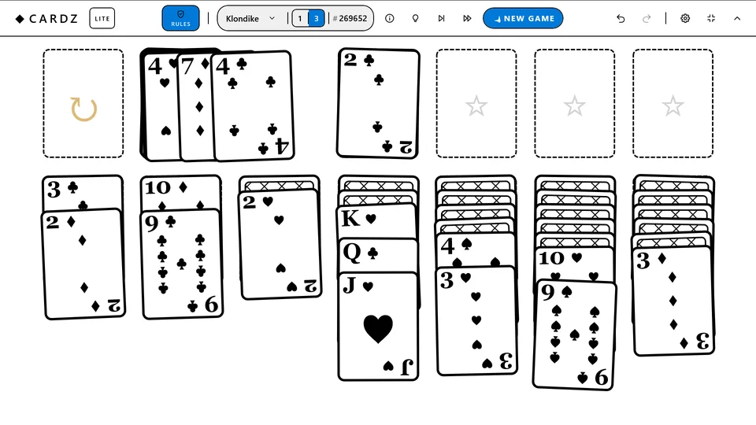

Stuck? Nothing is locked
A hint shows a good move, Play a move takes it for you, and auto-play carries the deal to the finish. Or switch the rules off and finish the deal your own way. No need to tell anyone.
Cardz Lite
Cardz Lite is the free edition of Cardz: the best-loved solitaire games, with clear rules and smooth, tactile card handling.

Ready to deal
Klondike draws one or three, Spider plays with one suit or four, and FreeCell, Yukon, Golf, Tri Peaks and Pyramid round out the table.

Pairs add up to thirteen
Scarab deck
1-suit & 4-suit · Eight perfect runs
Neon deck
Every card in plain sight
Monosolid deck
Clear all three peaks
Felt House deck
Move whole tails at once
Colourblind deck
One rank away
Scarab deckSmall, not stripped
A hint shows a good move, Play a move takes it for you, and auto-play carries the deal to the finish. Or switch the rules off and finish the deal your own way. No need to tell anyone.
Your play counts each game's deals, wins, losses and streaks. Klondike, Spider, Golf, Tri Peaks and Pyramid score every deal.
From the classic Felt House to Scarab, Neon and Monosolid, plus a high-contrast deck and a colourblind-friendly one.
Your game saves silently and resumes instantly, undo reaches back even after you close the app, and any deal number can be replayed for a rematch.
Full keyboard play, screen-reader narration, a high-contrast deck, a colourblind-friendly deck, and reduced motion. Mirror the table for left-handed play.
Free, with no ads, no accounts and no sign-in. Cardz Lite works offline, collects no data and never phones home.
Read the privacy policyWant more?
Cardz, the full app, deals more than twenty games and every deck, adds a rule-free Sandbox, and lets you make up games of your own.

Your next game is waiting